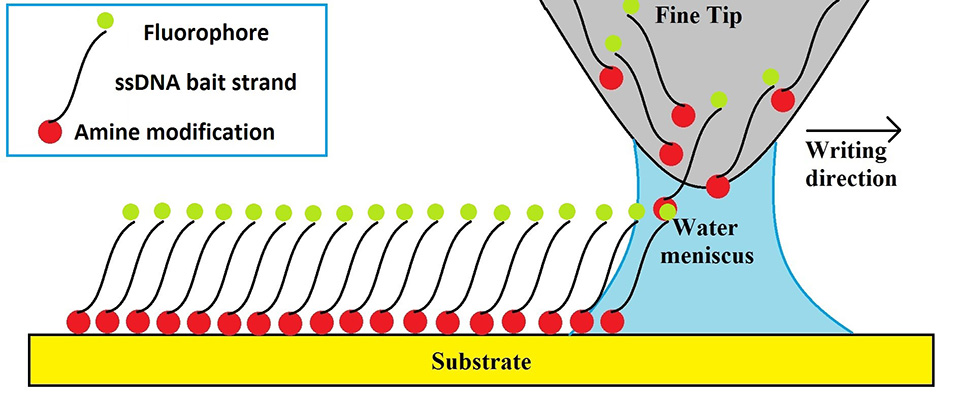
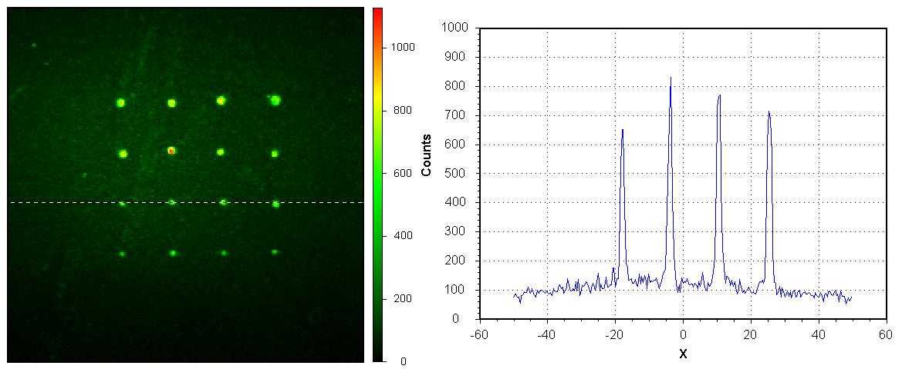
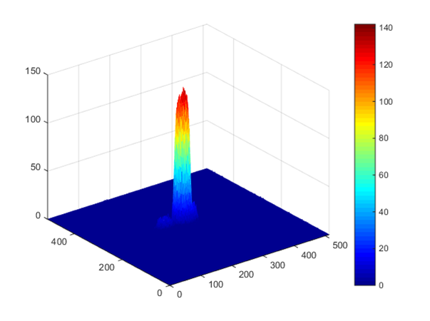

Dip Pen Nanolithography (DPNL) is a nanofabrication technique that allows one to print sub-micron resolution patterns, employing variety of molecules as “ink”. This technique employs AFM-like (Atomic Force Microscopy) tips that are mounted on to cantilevers and act as pens. The ink is transferred onto a substrate though a water meniscus that forms upon contact between the pens and the surface. A simple diagram of the patterning process is depicted in figure 1. Quality and characteristics of the patterns created by DPNL depend on several factors, such as humidity and temperature, which both affect the size of the water meniscus and therefore control the size and the uniformity of the pattern. This part of the experimental section focussed on optimizing the temperature and humidity in order develop a robust method for printing, which is a crucial step in our nano-biosensor design and assembly.
For optimizing the printing procedure, we printed (using DPNL) single stranded DNA (ssDNA) functionalized with an amine group at the 5` end in order to immobilize the strands on the epoxy-coated silica substrate. In this set of experiments, our target strands were designed to be fully complimentary to the bait strands. The target ssDNA sequences were functionalized with a fluorophore reporter, and therefore, successful hybridization of the target strands with the printed bait strands was indicated by fluorescence from the printed regions. The features of printed patterns such as size, spacing and uniformity were analysed by imaging the surface using a confocal microscope.
One of the advantages of this technique is the ability to create high local concentration of “ink” in the areas where it is localized on surface. Since the surface concentration of the DNA bait strands is high (due to tight packing of the ink molecules), the target strands upon hybridization are removed from solution and concentrated on the surface. This significantly improves the detection process. Indeed, the fluorescence signal (proportional to the number of target strands hybridized) was quantified using a confocal microscope. Furthermore, the DPNL instrument is typically equipped with multiple pens which can all carry a different type of ink, making our nano-biosensor also capable of analyzing several different sequences in parallel.
Epoxy functionalized glass slides were ordered from ArrayIT corp. Custom designed bait and target sequences of ssDNA were ordered from IDT DNA. DPNL platform (NLP 2000, NanoInk) was used for printing 1.0 mM bait strand solution (not containing a fluorophore) onto the slides. The slides were then incubated for 2 hours with a 0.1 mM target solution. Target DNA strands were functionalized with an ATTO488 fluorophore. Imaging was performed on a confocal microscope (ISS). Once the tips were well blotted (to remove excess ink), sequences of either 4x4 dots or 100 dots in a straight line were created and printing was carried out under different humidity (30%, 50% and 80%) and temperature (25, 35 and 45 oC) conditions. For all of the trials, the tips-surface contact time was 0.1 seconds and the dot spacing was maintained at 15 µm (as controlled by the software). Fluorescence imaging using a confocal microscope was performed for all printed samples. The printed sequences were first incubated in the solution containing fluorophore labelled complementary DNA (“target”) strands. Incubation was carried out in a microchannel–type assembly for 2 hours. Once the incubation was complete, slides containing the DNA pattern were carefully washed with di water and air dried. 50x50 µm fluorescence images were obtained by scanning the surface and identifying the printed pattern. Pattern features - size, shape and spacing of the dots - as well as relative photon counts were recorded for the analysis and comparison of the uniformity of prints created in each experiment.
As previously mentioned, DPNL relies on the formation of the water meniscus between the AFM-like tips and the printing surface. This water meniscus acts as a bridge to transfer the ink, DNA single strands, onto the surface creating a nanoarray pattern. Printing ssDNA, modified bait strands, using DPNL is a crucial part of this project as this approach enables using the nanobiosensor with samples containing small concentration of DNA. A number of experiments was performed in order to optimize the printing procedures. In DPNL the ink is transferred from the tip onto the surface through a water meniscus. Temperature and humidy affect the size of the water meniscus, which, in turn, has an effect on on the spatial features of the DNA print. Indeed, printing experiments performed under different temperatures (25, 35, 45 oC) and humidity (30%, 50% and 80%) showed that both factors are important to the quality and consistency of the DNA prints. It was found out that printing at 30-50% humidity and the temperature of 25 ͦC produces the smallest and most consistent DNA spatial features with a dot diameter of less than 1µm. Printing at 80% humidity lead to the dot pattern with irregular features (size and shape). Figure 2 shows an image and its cross-section of a typical 4x4 dot pattern printed at the optimal 50% humidity and 25 oC temperature conditions.
The smallest dots appear to be 1000nm in size. However, in a confocal microscope that was used for the analysis of the nano-pattern, a point-like light source does not appear in the images as a point but the Gaussian shaped distribution of intensities – so called Point Spread Function (PSF). Any object smaller than a microscope PSF appears identical to the one produced by a point-like light source. Thus, we cannot determine the actual size of the printed dots. We can only conclude that they are smaller than the size of the PSF of the microscope - which in our setup is 1000nm. Figure 3 shows a 3D representation of the intensity map for a typical printed DNA dot.
Guassian intensity distribution was consistently present for dots printed under optimal conditions, indicating successful immobilization of DNA baits on the surface in isles of submicron sizes. Importantly, DNA bait strands stayed functional and were able to hybridize with the labeled target strands.